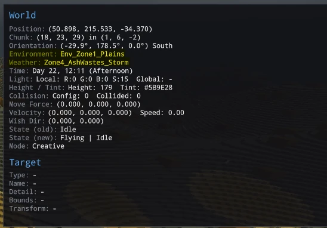
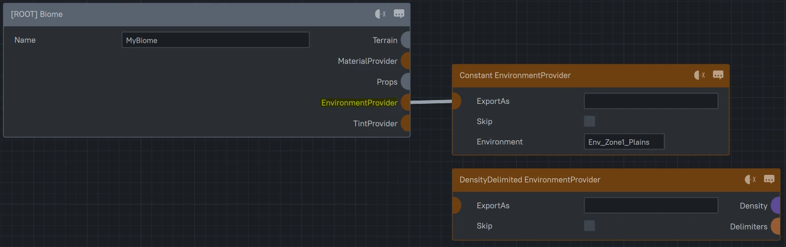
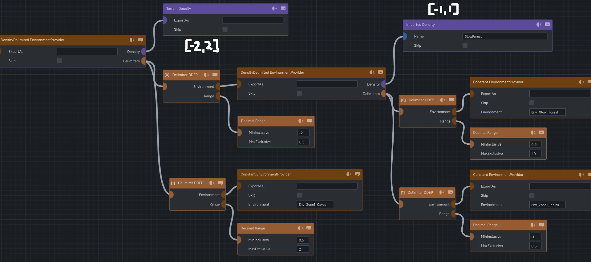
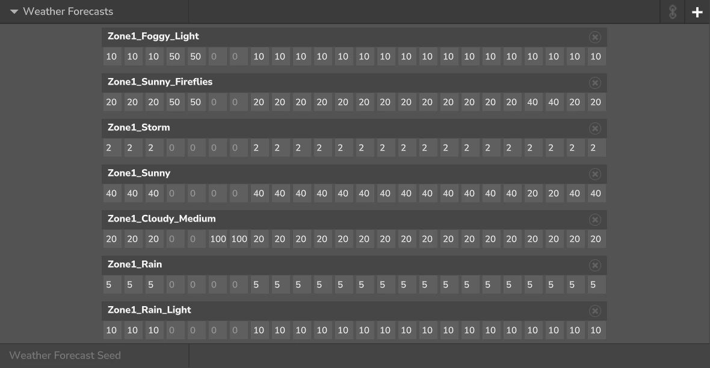
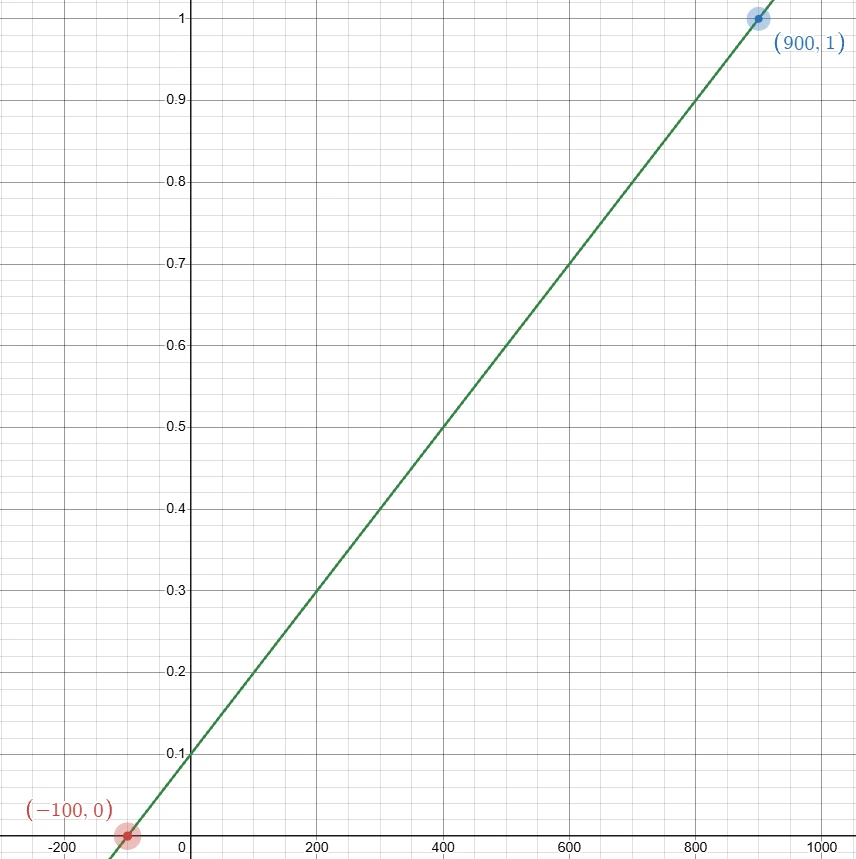
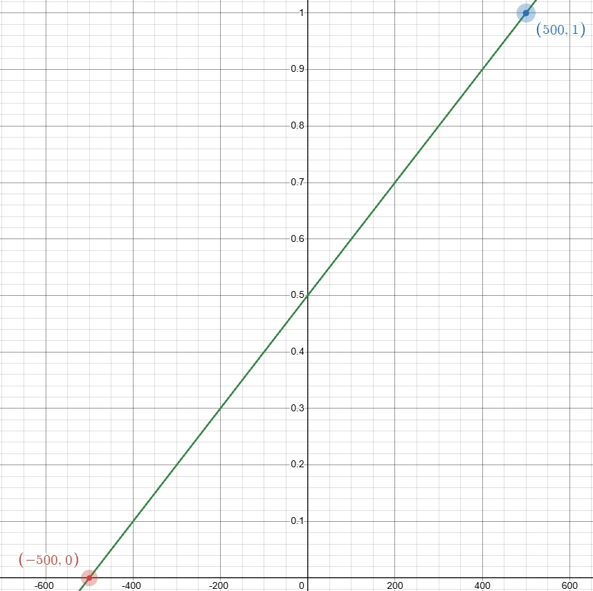
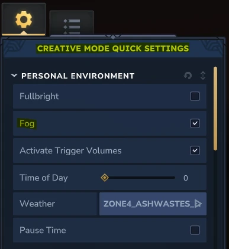
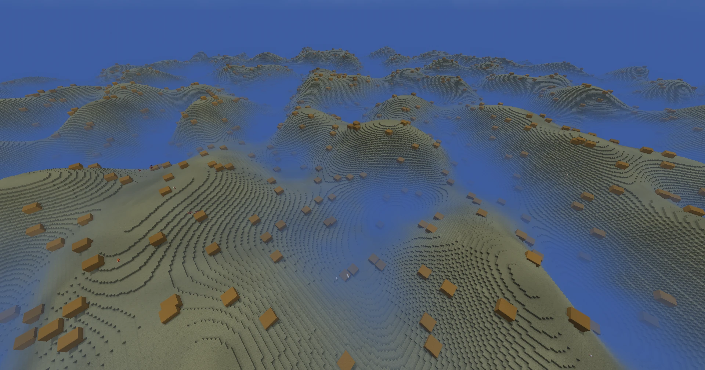

Environments create the mood of your World from the color of the sky, the particles surrounding the player, the NPCs that generate naturally,
to the music and sounds the fill the air!
To see what Environment you're in and what Weather is currently happening, press 'F7' twice and on the right there'll be a debug screen!

What environment is where is determined by the 'EnvironmentProvider' pin for Biomes!
While it may seem that each Biome can define 1 Environment,
we also have access to the 'DensityDelimited' Environment Provider allowing us to define multiple Environments within 1 Biome and even
defining Environments in a 3D scope unlike Biomes!

The Density Delimiter is commonly used to create a different above and below ground environments for different spawning rules, however, we can
also define things like ecologicial dead zones or areas with different sky hues and particles floating about.
To utilize them best, I'd recommend employing the techniques discussed in the Density and Materials sections as it's all about defining
and utilizing Density Masks!
Helpful Starts on Density Masking!
Shaping Techniques
Materials & Masking
I will just note one thing and that is to know the range of your Density as you need to make sure all the ranges of your Density go through the
Delimiters or else the Environment will be set to unknown. Because Material Providers don't have a Queue like the Material Providers
this can lead to a lot of spaghetti code if you're defining a lot of different Environments in 1 Biome especially if there's overlap, so
try to reduce the amount of Environments you want to use!

While a lot of Environmental Properties are separate and list which Environments they want to be a part of like
NPCs and Sounds,
Environments themselves define water attributes, general NPC spawn density, and the chances for certain weather events to occur!
Weather is my favorite to modify as it defines a lot of the colors/fogs that will hopefully compliment the Biome you're working on!
On the weather tab for Environments, you can see what weather has a chance to develop and when!

Editing and testing weather becomes quite easy as the game will change the weather to the one in the Asset Editor if you have it selected, even if
it shouldn't be playing in the Environment you're in! Because of this, you can quickly cycle through Hytale's weather assets to find which ones fit!
While there is a lot of options for Weather and most will require experimenting, I'd like to point out some tips and tricks mainly to do with fog!
The first is how to define the Fog Distances? You can think of these as a perspective of the player on a graph. The first number is where the
player has full visibility and the second number is where the fog is at its densest. Below are some examples!
Fog Diagrams
Regular_Weather
Weather
Fog Distance
0
-100
1
900

In this example, the player will have 10% of fog or 90% visibility gradually reaching 100% fog 900 blocks away from the Player.
Foggy_Weather
Weather
Fog Distance
0
-500
1
500

In this example, the player will have 50% of fog or 50% visibility gradually reaching 100% fog only 500 blocks away from the Player.
The above diagram isn't entirely accurate as the fog can sometimes be worse depending on render distance and if there's unloaded chunks nearby!
Hytale is designed to hide unloaded chunks by increasing the fog around the player.
You can modify this effect by changing the Effective View Distance Modifier! Setting it to 100 for example will remove the effect
entirely!
Speaking of not seeing, this tip is here just for devs! If you want a spooky swamp with think fog, it quickly becomes hard to see and make edits
to your terrain so be sure to disable 'Fog' in your 'Creative Mode Quick Settings!'

Finally, what do these 'Fog Height Falloffs' and 'Fog Densities' parameters do?
These together create a sort of mist that falls over the terrain up to a certain height. The 'Fog Densities' parameter controls the height. Setting it to
1 for example has the fog layer reaching 100 blocks up, 2 for 200 blocks. 'Fog Height Falloffs' controls how sharp or blended the layer of fog appears.
Setting it to 2 makes it a gradual change in fog while setting it higher to 10 as shown in the example below shows a clearer cutoff of where the fog ends.

One last note is that in caves or other dark environments, you may want to add in some ambient lighting to brighten up the world so the
player can see better, however, there's currently no good method to change that in the Weather system. What you can do besides spam crystals
everywhere is make some of the regular blocks you use like Stone have a 'Block Light' property,
make it always day by setting 'timepaused' in an Instance/World to 'true' and then modifying the
'Sunlight Damping Multiplier' parameter to values higher than '1', or create an invisible Light Block that replaces the Empty air in the World.